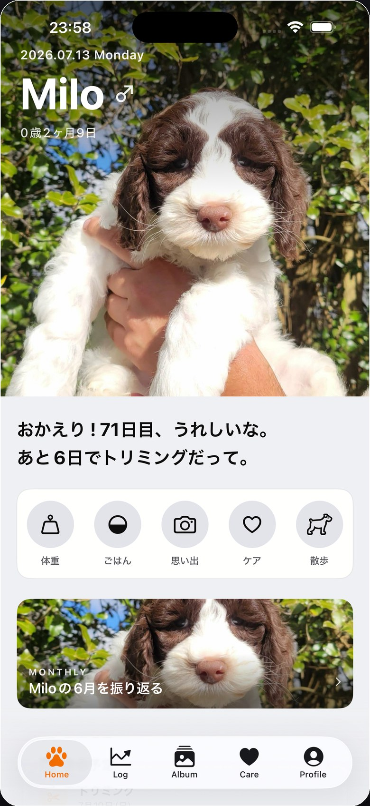
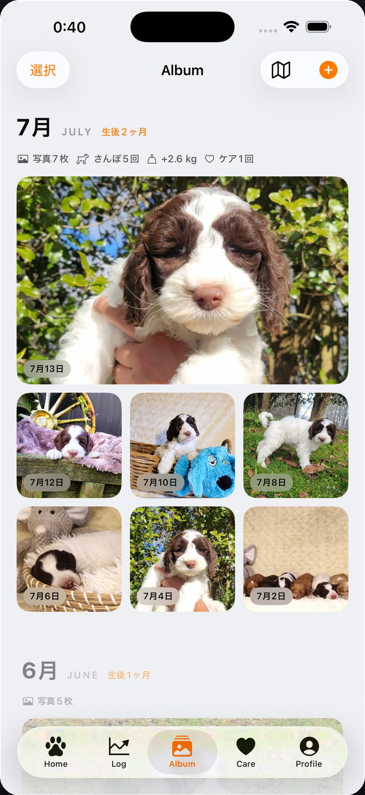
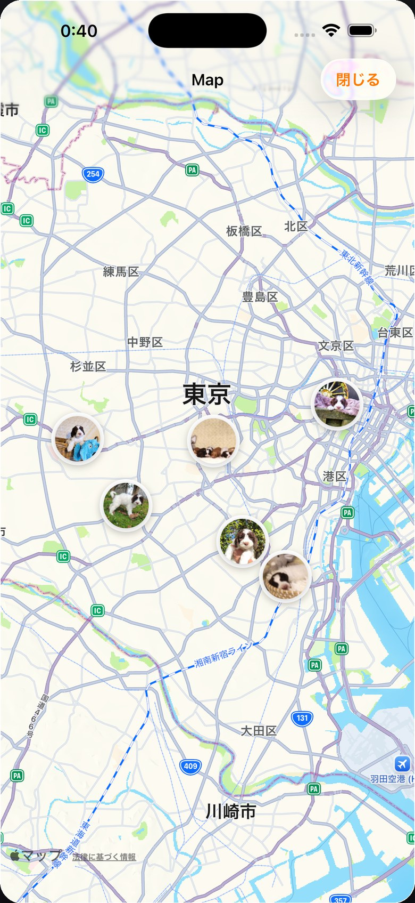
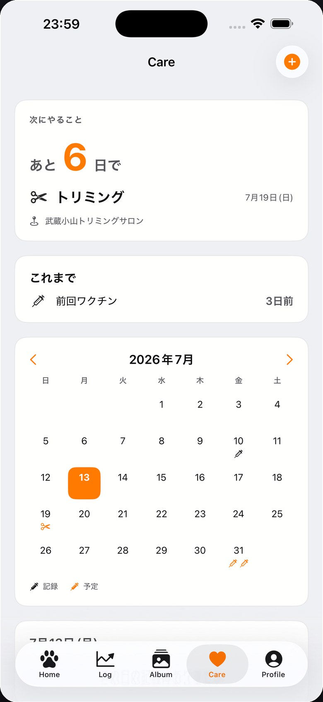
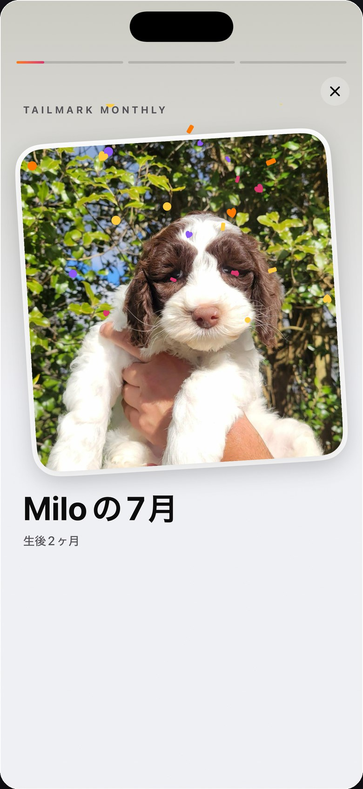

今日を記録
体重・ごはん・写真を、ワンタップで。
Tailmark
愛犬との毎日を、物語にするアプリ
体重も、ごはんも、はじめてのおでかけも。
愛犬と過ごした今日を、いつか開きたくなる物語に。
App Store 公開準備中

TAILMARKでできること
写真、健康、おでかけ、毎月の思い出。
愛犬との時間に必要なものを、ひとつにまとめました。
体重・ごはん・写真を、ワンタップで。
写真も場所も、ふたりだけの記憶に。
予定と記録を、ひとつのカレンダーに。
日々の記録が、毎月の物語になる。
今日を、迷わず残す。
ホームから、体重・ごはん・思い出・ケア・さんぽをワンタップ。続けるために、考えさせない設計です。
その日の気分で、いちばん近いアイコンをひとつ。毎日の積み重ねが、いつの間にか大切な記録になります。
写真も、行った場所も。
写真は月ごとにまとまり、撮った場所は地図のピンに。いつもの公園も、はじめての旅先も、ふたりだけの地図になっていきます。



忘れたくないことも、そっとそばに。
ワクチン、お薬、通院、トリミング。予定も記録も見渡せるから、「あれ、いつだっけ？」を減らせます。
TAILMARK MONTHLY
写真も、記録も、その月の“はじめて”も。Tailmark Monthlyが、いつもの1か月を何度でも見返したいストーリーにまとめます。

PRIVACY BY DESIGN
写真も記録も、あなたの端末とあなたのiCloudの中だけ。広告なし、トラッキングなし、アカウント登録なし。愛犬の時間は、あなたと家族のものです。
プライバシーポリシーを読む →TAILMARK FOR IOS
App Storeでの公開に向けて準備中です。
公開情報を受け取る ↗